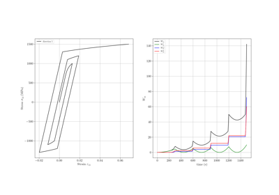

Examples
Below are examples illustrating Simcoon’s main features. These examples are designed to serve as tutorials. In that sense, an effort is made to keep the scripts simple and executable with a low computational cost.
Analysis and processing examples
Below are examples illustrating Simcoon’s capabilities for simulating mechanical and thermomechanical responses and post-processing results.
Continuum Mechanics Examples
Below are examples illustrating Simcoon’s main features. These examples are designed to serve as tutorials. In that sense, an effort is made to keep the scripts simple and executable with a low computational cost.


Heterogeneous materials simulation
Below are examples illustrating Simcoon’s capabilities for simulating heterogeneous materials.
Hyperelasticity
Below are examples illustrating Simcoon’s capabilities for simulating materials exhibiting hyperelasticity.
Constitutive Laws Examples
Below are examples illustrating Simcoon’s constitutive laws library.

Plasticity with isotropic hardening example